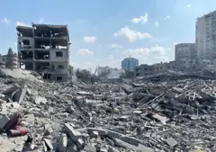

سجل الأدلة
كل مادة مرتبطة بواقعة لها سجل: نوعها ومصدرها وسياقها وحدودها وحالة التحقق منها. للمواد المحفوظة على المنصة بصمة رقمية تستطيع مطابقتها بنفسك.
- بيان رسمي · Times of Israel
تصريح وزير الدفاع الإسرائيلي بإعلان الحصار الشامل في 9 أكتوبر 2023 كما نقلته تايمز أوف إسرائيل
مكتمل وفق المنهجيةEV-0001 - تقرير · OCHA oPt
تحديث أوتشا العاجل رقم 5 الذي يوثق وقف الكهرباء والوقود والمياه وتوقف محطة الكهرباء الوحيدة
مكتمل وفق المنهجيةEV-0002 - وثيقة · ICC Pre-Trial Chamber I
بيان المحكمة الجنائية الدولية بإصدار مذكرتي التوقيف وتحديد الجرائم والفترة الزمنية
مكتمل وفق المنهجيةEV-0003 
صورة · WAFA (Palestinian News & Information Agency) in contract with APAimagesحي الرمال في مدينة غزة: مبان سكنية مدمرة جراء غارة إسرائيلية في 9 أكتوبر 2023. التقطت الصورة في 10 أكتوبر 2023.
تحقق جزئيEV-0004- تقرير · UNIFIL
تقرير يونيفيل عن الحادث، قدم إلى الأمم المتحدة في 28 فبراير 2024 وكشفته رويترز في مارس (نسخة نشرتها لجنة حماية الصحفيين)
مكتمل وفق المنهجيةEV-0005 - تقرير · Reuters / TNO
تحقيق رويترز الخاص مع تحليل TNO للشظايا والصوت وتثليث نقطة الإطلاق
مكتمل وفق المنهجيةEV-0006 - مقطع فيديو · Human Rights Watch
تحقق هيومن رايتس ووتش من 49 مقطعا مصورا وعشرات الصور وصور أقمار صناعية للموقع
تحقق من عناصر محددةEV-0007 - تقرير · OHCHR
تقرير المفوضية الموضوعي عن الهجمات بين أكتوبر وديسمبر 2023، ويتضمن وصف الموقع والدمار وتقدير الذخائر ونص بيان الجيش
مكتمل وفق المنهجيةEV-0008 - تقرير · Airwars
سجل Airwars للحادث ISPT0783 مع إحداثيات الموقع وقوائم الضحايا ومصادر التغطية (سجل محدث، والتاريخ هنا تاريخ الحادث)
مكتمل وفق المنهجيةEV-0009 - شهادة منشورة · CNN
شهادة شاهد عيان عن آثار الضربة نقلتها CNN في يوم الحادث
قيد التحققEV-0010 - تقرير · Forensic Architecture
إعادة البناء المكاني والصوتي للحادث لدى Forensic Architecture، وتشمل نموذجا ثلاثي الأبعاد للسيارة وتحليل اتجاه الإطلاق
مكتمل وفق المنهجيةEV-0011 - تقرير · Earshot
التحليل الصوتي لتسجيل المكالمة الذي قدر المسافة بين مصدر النار والسيارة
مكتمل وفق المنهجيةEV-0012 - صور أقمار صناعية · The Washington Post
صور أقمار صناعية تظهر مدرعات إسرائيلية قرب الموقع ضمن تحقيق واشنطن بوست
تحقق من عناصر محددةEV-0013 - بيان رسمي · IDF via BBC News
بيان الجيش الإسرائيلي في أغسطس 2026 بالإقرار بإطلاق النار على المركبة وفتح تحقيق جنائي
مكتمل وفق المنهجيةEV-0014 - مقطع فيديو · CNN
مقاطع شهود عيان جمعتها CNN وحللت بياناتها الوصفية وأصوات إطلاق النار فيها
تحقق من عناصر محددةEV-0015 - بيان رسمي · IDF via Times of Israel
الجدول الزمني لمراجعة الجيش الإسرائيلي المعلن في 8 مارس 2024
مكتمل وفق المنهجيةEV-0016 - تقرير · OCHA oPt
تحديث أوتشا العاجل رقم 131 بالحصيلة وملاحظات الفريق الأممي في مستشفى الشفاء
مكتمل وفق المنهجيةEV-0017 - تقرير · WHO
تقرير بعثة منظمة الصحة العالمية إلى المجمع في 5 أبريل 2024
مكتمل وفق المنهجيةEV-0018 - تقرير · OHCHR
تقرير المفوضية عن نمط الهجمات على مستشفيات غزة بين أكتوبر 2023 ويونيو 2024
مكتمل وفق المنهجيةEV-0019 - بيان رسمي · IDF via Times of Israel
إعلان الجيش الإسرائيلي انتهاء العملية وحصيلته المعلنة
مكتمل وفق المنهجيةEV-0020 - صورة · Jaber Jehad Badwan
مبنى الجراحات التخصصية في مجمع الشفاء الطبي بعد تدميره، 23 فبراير 2025.
تحقق جزئيEV-0021 - بيان رسمي · IDF via NBC News
نتائج تحقيق الجيش الإسرائيلي المعلنة في 5 أبريل 2024
مكتمل وفق المنهجيةEV-0022 - تقرير · Australian Government Special Adviser (Mark Binskin)
خلاصات المراجعة الأسترالية المستقلة (النسخة غير السرية) كما نشرتها ABC
مكتمل وفق المنهجيةEV-0023 - بيان رسمي · IDF Military Advocate General via Times of Israel
قرار النيابة العسكرية الإسرائيلية بعدم فتح تحقيق جنائي وأسبابه
مكتمل وفق المنهجيةEV-0024 - مقطع فيديو · CNN
مقطع من الموقع يظهر ذيل قنبلة GBU-39 حللته CNN مع خبراء أسلحة
تحقق من عناصر محددةEV-0025 - تقرير · Amnesty International
تحقيق منظمة العفو الدولية في غارتي 26 و28 مايو 2024 على مخيمات النازحين في رفح
مكتمل وفق المنهجيةEV-0026 - وثيقة · International Court of Justice
أمر محكمة العدل الدولية بتاريخ 24 مايو 2024 في قضية جنوب أفريقيا ضد إسرائيل
مكتمل وفق المنهجيةEV-0027 - شهادة منشورة · CNN
شهادات ثلاثة مبلغين إسرائيليين عملوا في المعسكر
قيد التحققEV-0028 - شهادة منشورة · B'Tselem
شهادات 55 معتقلا أفرج عنهم، جمعتها بتسيلم ونشرتها في تقرير «أهلا بكم في الجحيم»
قيد التحققEV-0029 - تقرير · OHCHR
تقرير مفوضية حقوق الإنسان عن الاحتجاز في سياق الأعمال العدائية في غزة
مكتمل وفق المنهجيةEV-0030 - وثيقة · Israeli Military Advocate General via CNN
قرار المدعي العسكري العام إلغاء لائحة الاتهام ضد خمسة جنود احتياط وأسبابه
مكتمل وفق المنهجيةEV-0031 - تقرير · WHO
بيان منظمة الصحة العالمية حول خروج المستشفى من الخدمة وأوضاع المرضى والطواقم
مكتمل وفق المنهجيةEV-0032 - بيان رسمي · IDF via Times of Israel
إعلان الجيش الإسرائيلي انتهاء الاقتحام وعدد المعتقلين واتهامه لمدير المستشفى
مكتمل وفق المنهجيةEV-0033 - شهادة منشورة · Amnesty International / PHRI
إفادة محامي منظمة أطباء لحقوق الإنسان بعد زيارة أبو صفية في 2 يوليو 2026، كما نشرتها منظمة العفو الدولية
قيد التحققEV-0034 - صور أقمار صناعية · Human Rights Watch
تحليل صور أقمار صناعية للمخيمات الثلاثة يظهر تدمير أو تضرر أكثر من 850 مبنى بعد ستة أشهر
تحقق من عناصر محددةEV-0035 - شهادة منشورة · Human Rights Watch
مقابلات مع 31 لاجئا مهجرا من المخيمات الثلاثة
قيد التحققEV-0036 - بيان رسمي · Israeli Ministry of Defense via Times of Israel
تصريح وزير الدفاع الإسرائيلي بشأن البقاء في المخيمات ومنع عودة السكان
مكتمل وفق المنهجيةEV-0037 - مقطع فيديو · The New York Times / CNN
مقطع مدته نحو ست دقائق صوره المسعف رفعت رضوان من داخل القافلة وعثر عليه في هاتفه، نشرته نيويورك تايمز وتناولته CNN
تحقق من عناصر محددةEV-0038 - تقرير · Earshot & Forensic Architecture
التقرير المشترك مع التحليل الصوتي للطلقات والنموذج ثلاثي الأبعاد وشهادات الناجيين
مكتمل وفق المنهجيةEV-0039 - بيان رسمي · IDF via Times of Israel
نتائج تحقيق الجيش الإسرائيلي في 20 أبريل 2025 والإجراءات التأديبية
مكتمل وفق المنهجيةEV-0040 - تقرير · OHCHR
إحصاء مفوضية حقوق الإنسان للقتلى قرب مواقع التوزيع وعلى طرق القوافل حتى 17 أغسطس 2025
مكتمل وفق المنهجيةEV-0041 - شهادة منشورة · Haaretz
شهادات ضباط وجنود إسرائيليين لصحيفة هآرتس عن أوامر إطلاق النار قرب مواقع التوزيع
قيد التحققEV-0042 - بيان رسمي · IDF via JTA
رد الجيش الإسرائيلي على تقرير هآرتس
مكتمل وفق المنهجيةEV-0043 - شهادة منشورة · CNN
شهادات شهود عيان لشبكة CNN عن الضرب وتأخر وصول الإسعاف
قيد التحققEV-0044 - بيان رسمي · IDF / Israel Police via Times of Israel
رواية الجيش والشرطة الإسرائيلية وقائمة الموقوفين
مكتمل وفق المنهجيةEV-0045 - بيان رسمي · US Ambassador to Israel via Al Jazeera
تصريح السفير الأمريكي لدى إسرائيل مايك هاكابي
مكتمل وفق المنهجيةEV-0046 - مقطع فيديو · B'Tselem
مقطعان: أحدهما صوره الهذالين لحظة إصابته، والآخر صوره أحد السكان ويظهر مطلق النار
تحقق من عناصر محددةEV-0047 - وثيقة · Israeli Southern District Attorney's Office via The Jerusalem Post
لائحة اتهام نيابة المنطقة الجنوبية أمام محكمة بئر السبع المركزية كما عرضتها جيروزاليم بوست
مكتمل وفق المنهجيةEV-0048 - تقرير · OHCHR oPt
بيان مكتب حقوق الإنسان الأممي حول أوامر الهدم الجماعي في أم الخير
مكتمل وفق المنهجيةEV-0049 - بيان رسمي · IDF via Times of Israel
بيان الجيش الإسرائيلي والوثائق التي نشرها لتبرير الضربة
مكتمل وفق المنهجيةEV-0050 - تقرير · Committee to Protect Journalists
ملف لجنة حماية الصحفيين عن الشريف وتقييمها للوثائق المنشورة والتهديدات السابقة
مكتمل وفق المنهجيةEV-0051 - وثيقة · OHCHR
بيان المقررة الخاصة إيرين خان في 31 يوليو 2025 بشأن التهديدات ضد الشريف
مكتمل وفق المنهجيةEV-0052 - مقطع فيديو · NBC News
لقطات حصلت عليها NBC News وتحققت منها تظهر مقذوفين إضافيين أصابا درج الطابق الرابع
تحقق من عناصر محددةEV-0053 - بيان رسمي · IDF via Times of Israel
نتائج التحقيق الأولي للجيش الإسرائيلي
مكتمل وفق المنهجيةEV-0054 - تقرير · Committee to Protect Journalists
توثيق لجنة حماية الصحفيين لأسماء الصحفيين القتلى والجرحى وتسلسل الضربات
مكتمل وفق المنهجيةEV-0055 - تقرير · OCHA oPt
تقرير أوتشا الإنساني عن عمليات الإخلاء في 20 و22 و25 مارس 2026
مكتمل وفق المنهجيةEV-0056 - وثيقة · OHCHR oPt
بيان مكتب حقوق الإنسان الأممي بشأن إخلاء 16 أسرة في أسبوع واحد
مكتمل وفق المنهجيةEV-0057 - وثيقة · OHCHR oPt
بيان مكتب حقوق الإنسان الأممي (30 يوليو 2024) عن قضايا الإخلاء في بطن الهوى والقوانين المطبقة
مكتمل وفق المنهجيةEV-0058
لا توجد سجلات تطابق هذا البحث. غير المرشحات أو امسحها.